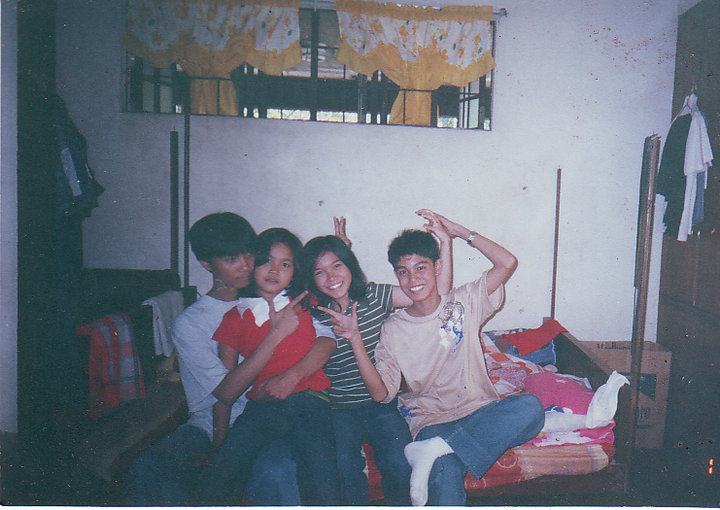
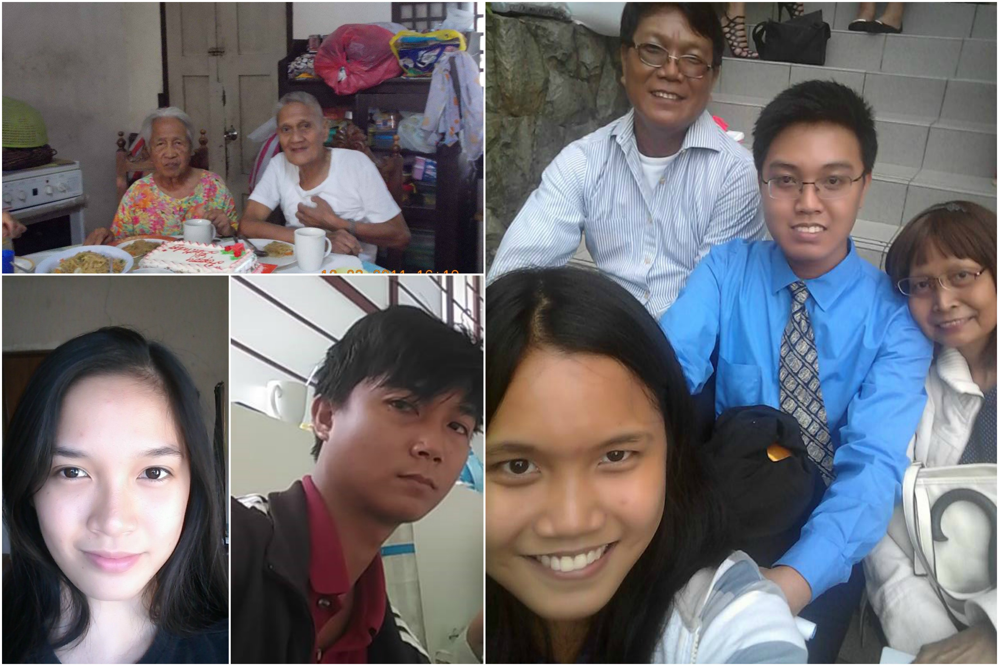
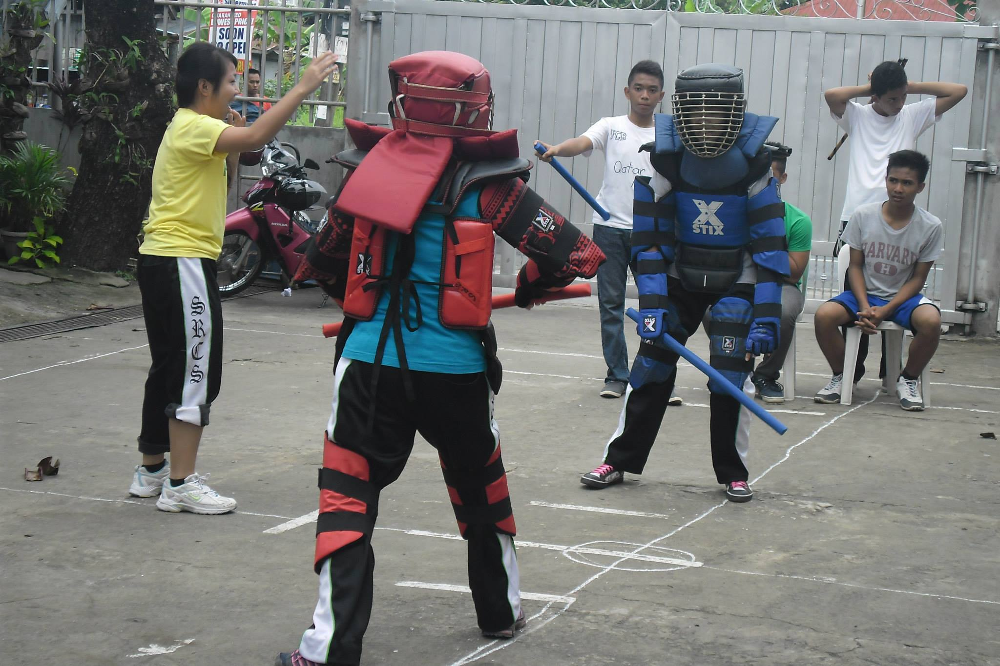
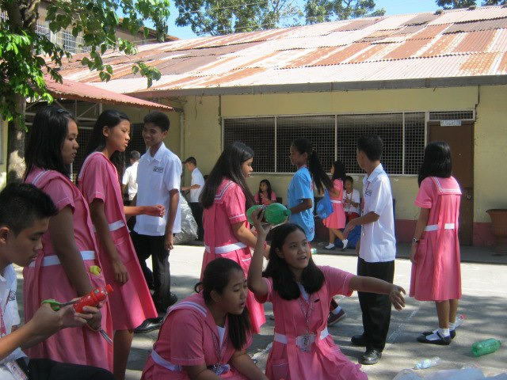
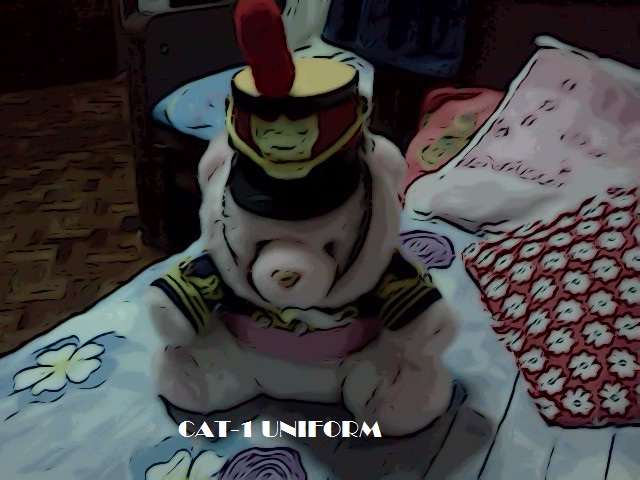
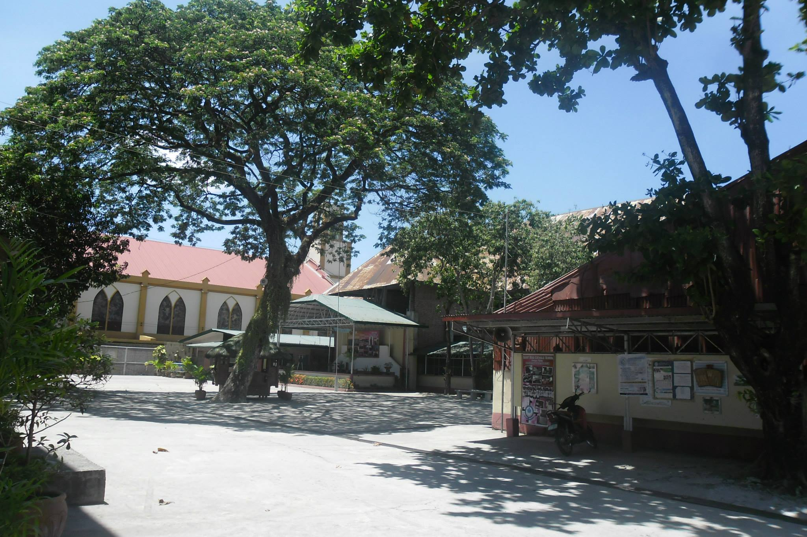
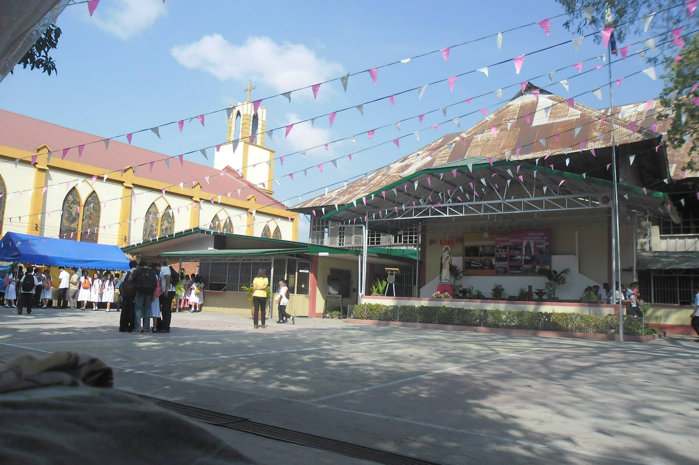
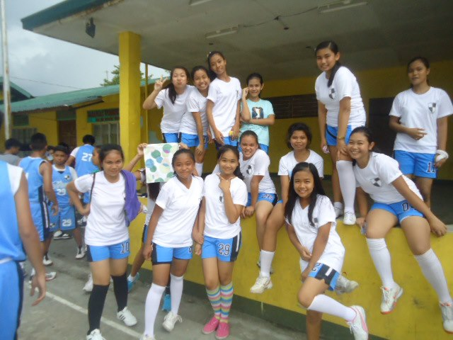

Basic Information
- Full Name:Catherine Mae Mangrobang Villacentino
- Nickname: Cat-Cat, Cath, neko
- Birthdate: November 26, 1997
- Hometown: Pob. Center, Ramos, Tarlac
- Current Place: Ma. Basa, Pacdal, Baguio City
Short Family Background
I'm gonna tell something about my family so that you will have an idea for my background. So, I'm last child of Mr. Crispin Mariano Villacentino and Mrs. Cleofe Mangrobang Villacentino. My Father is a government employee at my hometown. He finished his BS Business Administration at Holy Angels University and finished his Master's Degree at University of Baguio. My mother is also a product of St. Louis University finished a Commerce course. And back when she is still here, she is also a government employee at my hometown.
Next will be about my older siblings. My older siblings are already finished their studies. My oldest brother, Cristopher Ian is a Civil Engineer. He finished his Bachelor's Degree at St. Louis University and currently working at San Jose, Nueva Ecija. Next is my older sister, Christine Anne which is also a graduate of St. Louis University finished the BS Commerce Major in Marketing and currently working abroad. And then my older brother, Christian Jan finished the BS Accountacy like the other two he also finished his studies at St. Louis University and now currently preparing for the incoming board exam for accountant.
As you can see all my sibling's name has "Chris" or "Cris" but I'm the only one who has no "Chris" or "Cris" on my name and I asked my mother about it she said that she is out of names that starts with "Chris" or "Cris".
Personal Background
I will start it by sharing to you all why my parents gave me "Catherine Mae" as my name. And here are their answers, back then there is an actress that is popular back then and her name is Catherine Zeta Jones.And other one is, I think it came from a name of a saint of a near town because I was born November 26 and the feast of patron saint was November 24, St. Catherine of Alexandria. And for the "Mae" because they wanted two names for the first name.
I spend my life maybe 40% here in Baguio City, 50% in my hometown specifically inside the house and 10% in other places because back when I was a child we were always going to different places just to eat and to bond. I grew up having just four destination and it is the house, school, chruch and market and I'm only allowed to go out if it is important and you must be at home before 5 o'clock in the afternoon because my grandmother will be searching you and she won't stop asking where are you until you are at home. So, basically my childhood is spent inside the house.
Meet my Family
My Educational Background
I spent my elementary day at Ramos Central Elementary School because it is very near to my house. In my elementary days I did very well in academics and other curriculum. I did joined different organization and contest back then. And I was always in top 10 and being in the top 10 in your class is a big deal back then.
I did joined a contest in editorial writing and I won once but after that I didn't join anymore because I felt it is not for me. Then I joined sports and it is in track and field because I like running but unfortunately I didn't won so I focused myself in academics.
For my highschool life I spent it at St. Rose Catholic School and it is a catholic institution. Not like in my elementary days I was not good in class because I was not that active in studying and just go with the flow I might say. I got lazy back then.
In my four years of staying in that institution. I was part of CAT-1 where I learned to lead and to follow certain people. I also joined basketball team, in intramurals and the school basketball team but because of health reason I didn't continue playing basketball.
Currently a 3rd year BS Information Technology student. And trying to finish my studies.
Sneak peek of my highschool life
     Interest And Hobbies
I like playing games
I grew up staying inside the house and just playing computer games, brick game, toy car, cards(yu gi oh, and pokemon) and board games.My type of games are rpg, adventure, fighting and strategy. I don't grew up playing dress-up or barbie because I grew up with my older brother.
But when I am outside the house most likely I will be playing basketball and touching ball back then I was in elementary I always go home late because after class, me and my classmate will be playing touching ball or playing "habulan" and other kids games.
I like taking pictures
I like taking picture especially if it is stolen shot. In my highschool life I always carry my camera especially if there is a school event and when we going have a recollection, retreat and field trip. I like taking image of scenery and other people. But I don't like someone taking picture of me.
I'm a dog and cat lover
I really love dogs and cats. I take picture of my pets and sometimes post it in my facebook account. I am a fan of cuteness and furiness especially puppies and cuteness is my weakness. I think we have 12 dogs, 2 dog here and 10 dogs in my hometown and we have 10 cats, 5 cat here and 5 in my hometown.
I like to write things
Mostly when I have nothing to do or I'm nervous I get a notebook or a piece paper and write something. I think I like writing poem, songs, or just random things. It is like a stress reliever because I'm more expressive when writing than speaking what's in my mind.